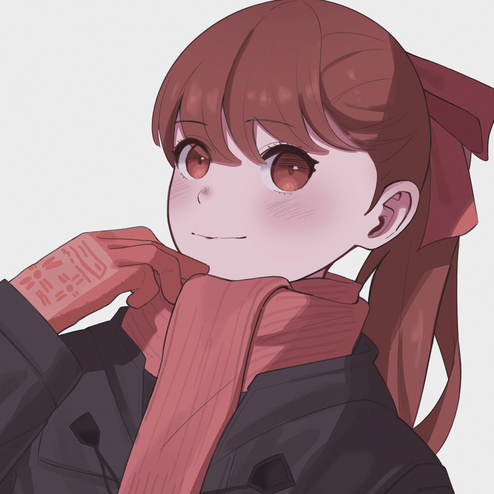

More About Me and Japanese role-playing game!
Persona 5 Royal(P5R) is the first Japanese role-playing game(JRPG) I have ever played. I was not into this kind of game before, because I think shooting games are more attractive to me, and more importantly I can play with friends. However, I began having a feeling that I can no long gain happiness from shooting game because it is too competitive for me, I felt really stressed after losing games. Therefore, I started sreaching on steam to find a good game just for relax. Here comes P5R! When I played this game for the first time, I was straight up obsessed with the game. I like the storyline, characters, and music in this game. The story for each chapter of the game is unique, but the there are something connecting all these chapters. The music is very awesome, especially the music called Life Will Change. Whenever I heard this I just felt so energetic. The characters are well-designed as well. Kazume Yoshizawa is my favourite character, you can learn more about her here. When I finished this game, I knew that this was the game that really made me feel relaxed, so after that, I started playing JRPG games.
Why I Love JRPG
- It helps me relax.
- The storyline is attractive, and unqiue.
- All the characters are portrayed with hard work.
- Music for each scene is well designed.